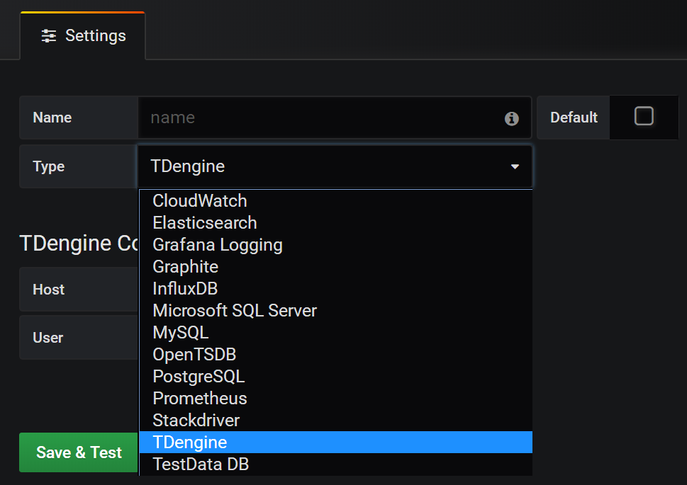
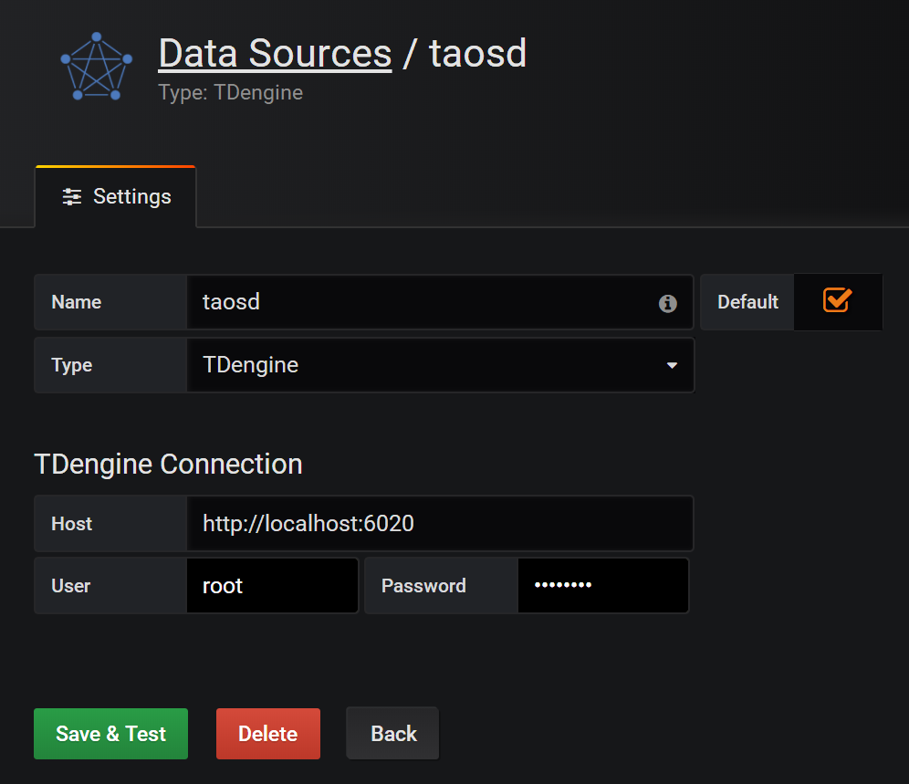
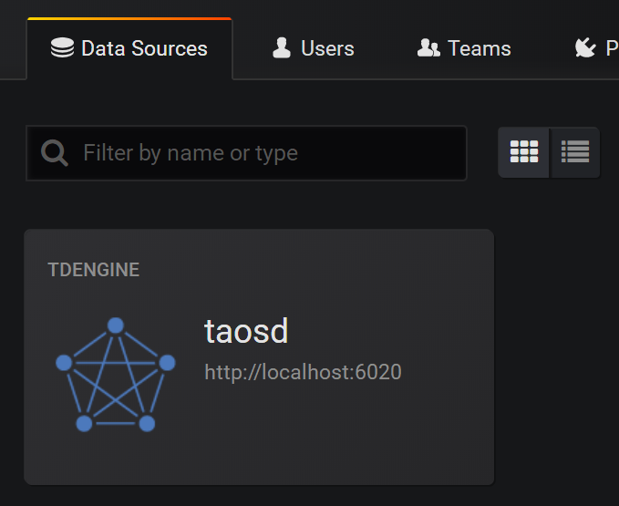
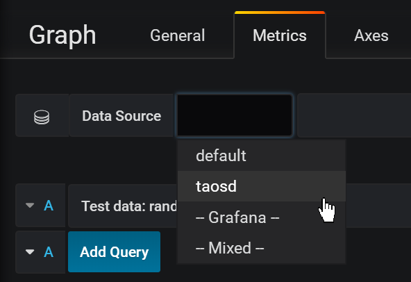
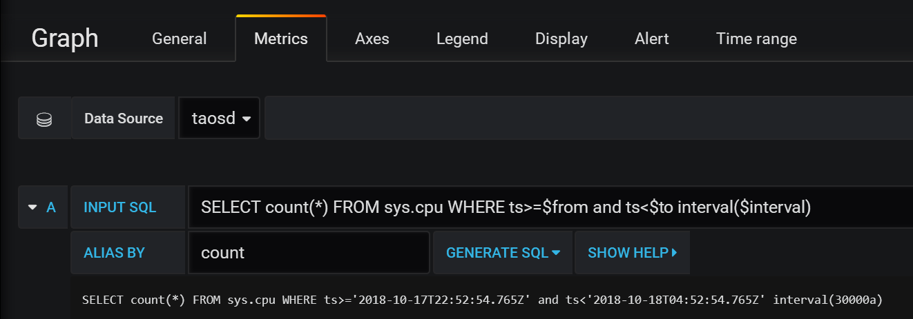

Connect with other tools
Telegraf
TDengine is easy to integrate with Telegraf, an open-source server agent for collecting and sending metrics and events, without more development.
Install Telegraf
At present, TDengine supports Telegraf newer than version 1.7.4. Users can go to the download link and choose the proper package to install on your system.
Configure Telegraf
Telegraf is configured by changing items in the configuration file /etc/telegraf/telegraf.conf.
In output plugins section，add [[outputs.http]] iterm：
- url: http://ip:6020/telegraf/udb, in which ip is the IP address of any node in TDengine cluster. Port 6020 is the RESTful APT port used by TDengine. udb is the name of the database to save data, which needs to create beforehand.
- method: "POST"
- username: username to login TDengine
- password: password to login TDengine
- data_format: "json"
- json_timestamp_units: "1ms"
In agent part：
- hostname: used to distinguish different machines. Need to be unique.
- metric_batch_size: 30，the maximum number of records allowed to write in Telegraf. The larger the value is, the less frequent requests are sent. For TDengine, the value should be less than 50.
Please refer to the Telegraf docs for more information.
Grafana
Grafana is an open-source system for time-series data display. It is easy to integrate TDengine and Grafana to build a monitor system. Data saved in TDengine can be fetched and shown on the Grafana dashboard.
Install Grafana
For now, TDengine only supports Grafana newer than version 5.2.4. Users can go to the Grafana download page for the proper package to download.
Configure Grafana
TDengine Grafana plugin is in the /usr/local/taos/connector/grafana directory. Taking Centos 7.2 as an example, just copy TDengine directory to /var/lib/grafana/plugins directory and restart Grafana.
Use Grafana
Users can log in the Grafana server (username/password:admin/admin) through localhost:3000 to configure TDengine as the data source. As is shown in the picture below, TDengine as a data source option is shown in the box:

When choosing TDengine as the data source, the Host in HTTP configuration should be configured as the IP address of any node of a TDengine cluster. The port should be set as 6020. For example, when TDengine and Grafana are on the same machine, it should be configured as _http://localhost:6020.
Besides, users also should set the username and password used to log into TDengine. Then click Save&Test button to save.

Then, TDengine as a data source should show in the Grafana data source list.

Then, users can create Dashboards in Grafana using TDengine as the data source:

Click Add Query button to add a query and input the SQL command you want to run in the INPUT SQL text box. The SQL command should expect a two-row, multi-column result, such as SELECT count(*) FROM sys.cpu WHERE ts>=from and ts<to interval(interval), in which, from, to and inteval are TDengine inner variables representing query time range and time interval.
ALIAS BY field is to set the query alias. Click GENERATE SQL to send the command to TDengine:

Please refer to the Grafana official document for more information about Grafana.
Matlab
Matlab can connect to and retrieve data from TDengine by TDengine JDBC Driver.
MatLab and TDengine JDBC adaptation
Several steps are required to adapt Matlab to TDengine. Taking adapting Matlab2017a on Windows10 as an example:
- Copy the file JDBCDriver-1.0.0-dist.jar in TDengine package to the directory ${matlab_root}\MATLAB\R2017a\java\jar\toolbox
- Copy the file taos.lib in TDengine package to ${matlab root dir}\MATLAB\R2017a\lib\win64
- Add the .jar package just copied to the Matlab classpath. Append the line below as the end of the file of ${matlab root dir}\MATLAB\R2017a\toolbox\local\classpath.txt
$matlabroot/java/jar/toolbox/JDBCDriver-1.0.0-dist.jar
- Create a file called javalibrarypath.txt in directory ${user_home}\AppData\Roaming\MathWorks\MATLAB\R2017a_, and add the _taos.dll path in the file. For example, if the file taos.dll is in the directory of C:\Windows\System32，then add the following line in file javalibrarypath.txt:
C:\Windows\System32
TDengine operations in Matlab
After correct configuration, open Matlab:
build a connection：
conn = database(‘db’, ‘root’, ‘taosdata’, ‘com.taosdata.jdbc.TSDBDriver’, ‘jdbc:TSDB://127.0.0.1:0/’)Query：
sql0 = [‘select * from tb’]data = select(conn, sql0);Insert a record:
sql1 = [‘insert into tb values (now, 1)’]exec(conn, sql1)
Please refer to the file examples\Matlab\TDengineDemo.m for more information.
R
Users can use R language to access the TDengine server with the JDBC interface. At first, install JDBC package in R:
install.packages('rJDBC', repos='http://cran.us.r-project.org')Then use library function to load the package:
library('RJDBC')Then load the TDengine JDBC driver:
drv<-JDBC("com.taosdata.jdbc.TSDBDriver","JDBCDriver-1.0.0-dist.jar", identifier.quote="\"")If succeed, no error message will display. Then use the following command to try a database connection:
conn<-dbConnect(drv,"jdbc:TSDB://192.168.0.1:0/?user=root&password=taosdata","root","taosdata")Please replace the IP address in the command above to the correct one. If no error message is shown, then the connection is established successfully. TDengine supports below functions in RJDBC package:
- dbWriteTable(conn, "test", iris, overwrite=FALSE, append=TRUE): write the data in a data frame iris to the table test in the TDengine server. Parameter overwrite must be false. append must be TRUE and the schema of the data frame iris should be the same as the table test.
- dbGetQuery(conn, "select count(*) from test"): run a query command
- dbSendUpdate(conn, "use db"): run any non-query command.
- dbReadTable(conn, "test"): read all the data in table test
- dbDisconnect(conn): close a connection
- dbRemoveTable(conn, "test"): remove table test
Below functions are not supported currently:
- dbExistsTable(conn, "test"): if talbe test exists
- dbListTables(conn): list all tables in the connection